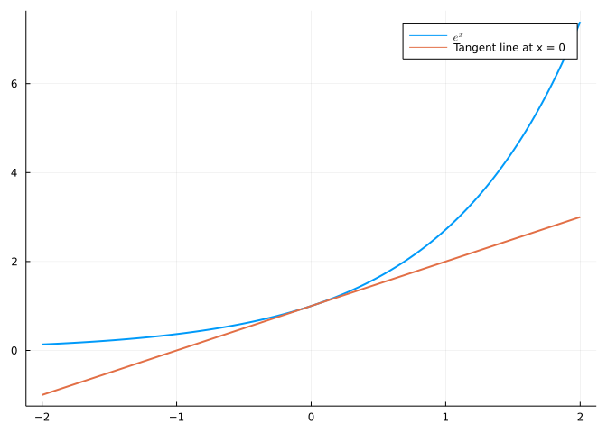
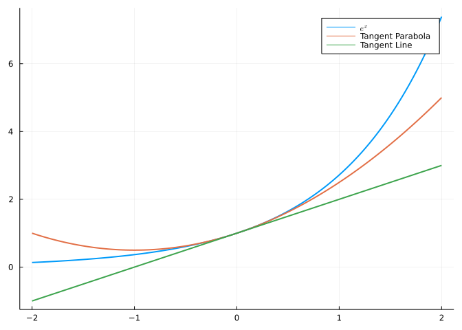

Overview + The Calculus You Need
The first couple lectures
1 Overview
A big part of the series will be first order equations and second order equations.
1.1 First Order Equations
These equations take the form
\frac{dy}{dt} = ay + q(t) \tag{1}
or
\frac{dy}{dt} = f(y) \tag{2}
Equations like Equation 1 mean that the rate of change of y (\frac{dy}{dt}) are partly dependent on the solution itself, y, and partly dependent on the inputs q(t), which produce their own change.
Equation 1 is a linear equation with a forcing term on the right hand side. “Linear” means we have y by itself.
Equation 2 is a nonlinear equation, since f(y) could be y^2, y^3, etc. It doesn’t have the forcing term; the rate of change of y is dependent only on the value of y itself.
1.2 Second Order Equations
These equations have a second derivative (acceleration).
\frac{d^2y}{dt^2} = -ky \tag{3}
Equation 3 is Newton’s law.
my'' + by' + ky = f(t) \tag{4}
In Equation 4, f(t) is your external (forcing) term.
We want linearity and constant coefficients m, b, and k.
1.3 Good equations
Equations that are Linear with constant coefficients are good equations:
\text{Nice function} \, f(t) \rightarrow \text{Nice function} \, y(t)
Sometimes we can just get the equation; sometimes we need to do the equation with integrals.
When you have varying coefficients and nonlinear forcing terms, you need to find numerical solutions.
1.4 Systems of n equations
In reality, we often have many equations.
\frac{d\textbf{y}}{dt} = \textbf{Ay} \tag{5}
In Equation 5, \textbf{y} is a vector \left(y_1, y_2, \ldots, y_n \right) and \textbf{A} is an n \times n matrix (n coupled equations, n unknowns).
\frac{d^2\textbf{y}}{dt^2} = -\textbf{Sy} \tag{6}
Here, y is still a vector of n unknowns, but S is a symmetric matrix. Again, linear, constant coefficients… but several variables at once.
We will need eigenvalues and eigenvectors to turn the n coupled equations into n uncoupled equations that we can solve separately.
1.5 Numerical Analysis
Generally, solutions are found numerically, and there’s a lot to learn about exactly how that’s done. MATLAB is a first-class package (lol) that gives you lots of equations to solve differential equations.
ODE45: Ordinary Differential Equations 45.
Euler came up with the first numerical method for calculating differential equations; his solution was fine but not sufficiently accurate - ODE45 has much higher accuracy and higher flexibility.
1.6 Partial Differential Equations
\frac{du}{dx} = \frac{d^2u}{dx^2} \tag{7}
Here we have 2 variables: time and x, in the space direction. Equation 7 is the heat equation.
\frac{d^2u}{dt^2} = \frac{d^2u}{dx^2} \tag{8}
Equation 8 is the wave equation. Equation 7 and Equation 8 are both infinite systems of equations in space and time.
\frac{d^2u}{dx^2} + \frac{d^2u}{dx^2} = 0 \tag{9}
Equation 9 is the Laplace equation.
1.7 Goal
Get a standard, clear picture of the basic differential equations that we can solve and understand.
2 The calculus you need
2.1 Important Derivatives:
\frac{d}{dx}x^n = nx^{n-1}
\begin{aligned} \frac{d}{dx}(\sin{x}) &= \cos{x} \\ \frac{d}{dx}(\cos{x}) &= -\sin{x} \end{aligned}
\frac{d}{dx}e^x = e^x
\frac{d}{dx}\ln{x} = \frac{1}{x}
2.2 Derivative Rules:
\frac{d}{dx}(f + g) = \frac{d}{dx}f + \frac{d}{dx}g
The product rule (Equation 10):
\frac{d}{dx}(fg) = g\frac{df}{dx} + f\frac{dg}{dx} \tag{10}
The quotient rule (Equation 11)1:
1 Easily remembered by taking the product rule on f and \frac{1}{g}
\frac{d}{dx}\left(\frac{f}{g}\right) = \frac{g\frac{df}{dx}-f\frac{dg}{dx}}{g^2} \tag{11}
And the all-important chain rule (Equation 12):
\frac{d}{dx}\left(f(g)\right) = \frac{df}{dg}\frac{dg}{dx}= g'(f) \cdot f' \tag{12}
Last, the Fundamental Theorem of Calculus (Equation 13):
\frac{d}{dx} \int_0^xy(t)dt = y(x) \tag{13}
You take a function, you integrate it, you take the derivative, you get it back.
2.3 Applying the Fundamental Theorem:
y(t) = \int_0^te^{t-s}q(s)ds \hspace{2em} \text{solves} \hspace{2em} \frac{dy}{dt} = y + q(t) \tag{14}
We want to show that Equation 1 is solved by the integral in Equation 14.
Let’s take the derivative of the integral:
\begin{aligned} y(t) &= \int_0^te^{t-s}q(s)ds \\ \frac{dy}{dt} &= \frac{d}{dt}\left(\int_0^t e^{t-s}q(s)ds\right) \\ &= \frac{d}{dt}\left(e^t\int_0^t e^{-s}q(s)ds\right) \\ &= e^t\frac{d}{dt}\left(\int_0^t e^{-s}q(s)ds\right) + \frac{de^t}{dt}\left(\int_0^t e^{-s}q(s)ds\right)\\ &= e^t\left(e^{-t} q(t) \right) + e^t\left(\int_0^t e^{-s}q(s)ds\right)\\ &= q(t) + \int_0^te^{t-s}q(s)ds \end{aligned}
Therefore:
\frac{dy}{dt} = y(t) + q(t)
And Equation 1 is satisfied.
2.4 The Taylor Series
Tangent line to a graph:
\begin{aligned} f(t + \Delta t) &\approx f(t) + \Delta t \frac{df}{dt}(t)\\ \frac{\Delta f}{\Delta t} &\approx \frac{df}{dt} \end{aligned} \tag{15}
Equation 15 expresses the most fundamental idea of differential calculus. At the point t, the derivative \frac{df}{dt} is very close to the change in the function over a short distance \Delta t.
Hence, on the graph of e(t):
Since \frac{d}{dt}\left(e^x\right) = e^x, the slope of the tangent line at any point along the graph is the height of the graph at that point.
We can get closer to our function if, instead of a tangent line, we use a tangent parabola:
f(t + \Delta t) \approx \frac{df}{dt} + \frac{1}{2!}(\Delta t)^2\frac{df^2}{dt^2}

You can see that the tangent parabola approximates e^x much better than the tangent line does.
To do better, we could take the third derivative, the fourth derivative, etc… and when we’re done, we get e^t.
This leads us to the Taylor Series:
f(x) = \sum_0^{\infty} \frac{1}{n!}(\Delta t)^n \frac{d^n f}{dt^n} \tag{16}